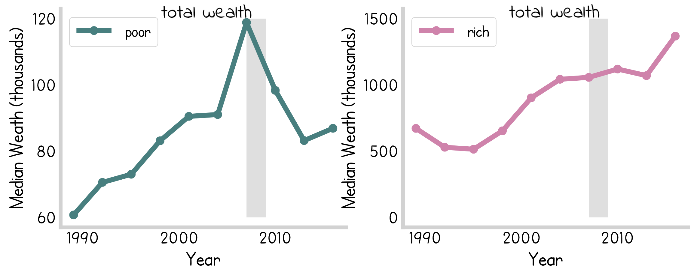
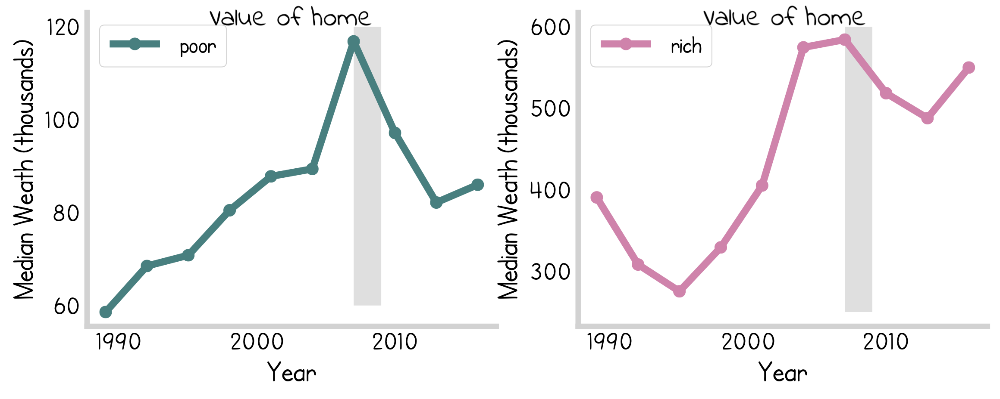
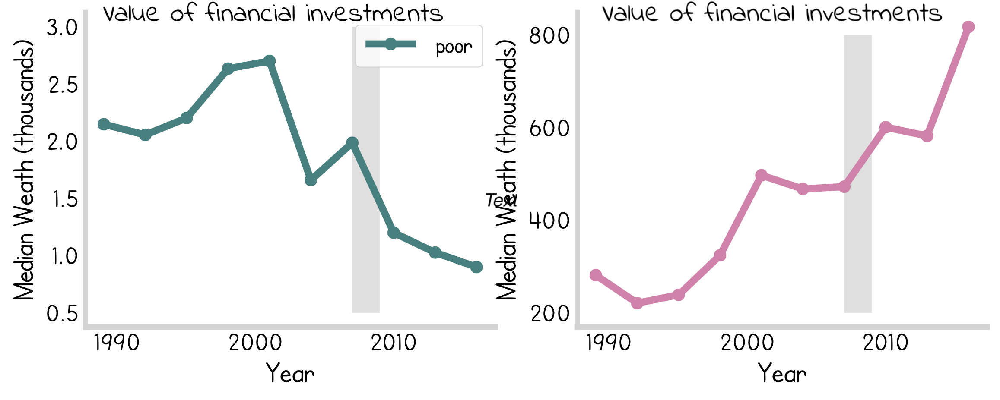
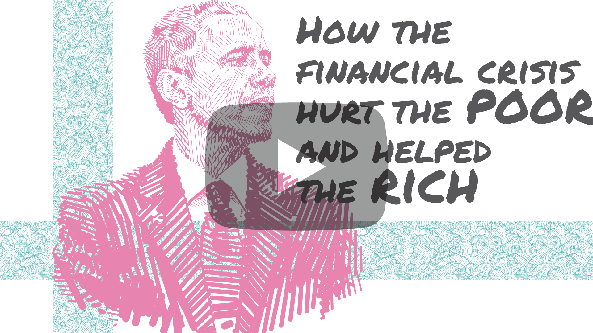

How the Financial Crisis Hurt the Poor and Helped the Rich
Winners and Losers
The 2007 financial crisis affected each of us differently, with the “winners” and “losers” falling sharply into economic lines. The graph below compares how the bottom 20% of income earners with the top 10%. Adjusted for inflation, there is an obvious difference in how the two group faired through the financial crisis (highlighted in gray). 
{kind=link}
Why did this happen? Why did the poor do so much worse through the crisis? The answer lies in how people keep their assets.
Home is where the heart is… if you’re poor
Looking at just the most recent data from 2016, we see that the majority of lower income earners have almost all of their wealth in their home. Very little of their total wealth is in financial products such as stocks, bonds, futures etc.
Compare this to the top earners which have a sizable portion of their total assets tied up in financial products:
This difference is not merely cosmetic, it had a profound impact on why the rich did better in the recession.
No one was totally spared from the mortgage crisis
Despite the total wealth increasing through the recession, the rich did lose money on their homes as the poor did when the bubble burst in 2007. The graph below show the median wealth tied up in the homes of both groups. 
{kind=link}
Financial instruments are the refuge of the wealthy
However, the rich were mostly insulated from the affects of the crisis thanks to their financial investment which accrued value through the recession.

{kind=link}
This illustrates how the difference in how both groups responded to the financial catastrophe can be primarily attributed to a difference in how their assets were allocated.
Conclusion
The net result of the assets of the rich being protected was expected but not inevitable. The post-2007 recovery policies that focused on distribution of the 700+ billion dollars allocated by congress favored the preservation of financial institutions over the welfare of individual citizens. While the Obama administration was relatively “left” leaning compared to what McCain’s platform was, it seems the net product of his stimulus allocation was indistinguishable from what a hypothetical republican administration would have done. For more information, watch the video below outlining these results:

Notes
- Code used to generate these graphs can be found here
- Data taken from the survey of consumer finances